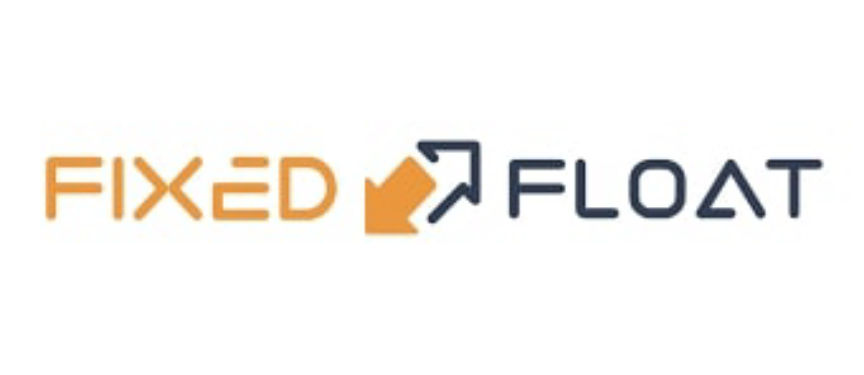

Investigating the Selective Scamming Behavior of Non-KYC Exchange FixedFloat

In recent developments, serious allegations have surfaced against the well-known non-KYC exchange, FixedFloat, suggesting selective scamming practices targeting users. These claims have been brought to light by a market admin who revealed that the exchange retains significant transactions under the guise of "anti-money laundering" measures. Unlike its competitors, who return funds to the sender in the event of an unexecuted exchange order, FixedFloat reportedly keeps the funds for itself.
Users on Dread, the largest English forum on the dark net, have also voiced similar concerns, accusing the exchange of engaging in selective scamming activities specifically related to large exchange orders.
Warning: Got fucked by fixedfloat.com
Converted large amounts over fixedfloat over the years, never had an issue. Approximately one hour ago, coins were sent to their exchange for hot wallet rebalancing. XMR didn't come out the other end, and turned out to be confiscated.
Their support replied with: "We received word from our exchange partner that your crypto were obtained through illegal proceedings. Please provide proof of funds."
Careful everyone!
Can confirm.
Happened to me 3 weeks ago, lost around $9k.
Ironically, did a transaction that was around the same amount about 2 hours before, they processed it no problem.
They have turned into selective scammers.
They have no "exchange partner", and they will continuously say their intention is to "return funds to the victim", when there is no fucking victim except you the user getting scammed by them. They know exactly what they are doing.
Happened to me about 3-4 weeks ago for $9k. They know exactly what they are doing. Processed a near identical transaction mere hours before that went through no problem, then the next one gets pulled for 'KYC time'.
Selective scammers. They probably have eyes on a couple of the market wallets, if they see any connection with coins coming from there they pull your card and you're SOL. That's my suspicion anyway.
In order to investigate these allegations, our team conducted tests which resulted in our funds being unexpectedly "suspended." It is worth noting that DarknetLive relies on user donations and does not engage in any illegal activities to generate revenue.
These allegations paint a disconcerting picture of selectively enforced rules within the industry. It appears that when presented with a substantial opportunity, the operators of FixedFloat are willing to disregard their own policies and resort to unjust practices. While the exchange may claim to prioritize handling funds of questionable origin by refraining from exchanging them, they seem to have no qualms about appropriating these funds for their own benefit.
The foundation of FixedFloat's business model seemingly revolves around offering extremely low fees, but this is overshadowed by their alleged large-scale confiscation of funds, knowing that proving their misdeeds will be nearly impossible for their customers. In light of these allegations, caution is advised when considering any exchange requiring KYC verification. It is disheartening to witness a scam masquerading behind seemingly legitimate policies, ultimately profiting illegally at the expense of unsuspecting customers.
Had this incident been a genuine violation of their Terms of Service, FixedFloat should have refunded the money, deducting applicable transaction fees, and provided an explanation regarding the suspicious nature of the swap, leading to its cancellation.
It would be interesting to see if this windfall profit from their alleged illicit activities will be reported (or not) on their 2023 tax form.